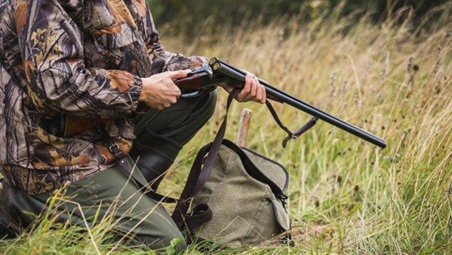

¿Que Actividades al Aire Libre puedes hacer?
- Caza deportiva: El Parque Natural de la Sierra de Andújar cuenta con numerosas fincas destinadas al deporte de la caza, una actividad que goza en estos parajes de Sierra Morena de enorme prestigio y tradición. Los magníficos cotos privados de caza de Lugar Nuevo y Contadero-Selladores son visitados con frecuencia y desde tiempo inmemorial por cazadores de todo el mundo.
- Senderismo: La Sierra de Andújar es un enclave idóneo para la práctica de actividades de bajo impacto ambiental como el senderismo o la bicicleta de monaña. Posee itinerarios que muestran el esplendor paisajístico y faunístico de uno de los bosques mediterráneos mejor conservados de la península.
